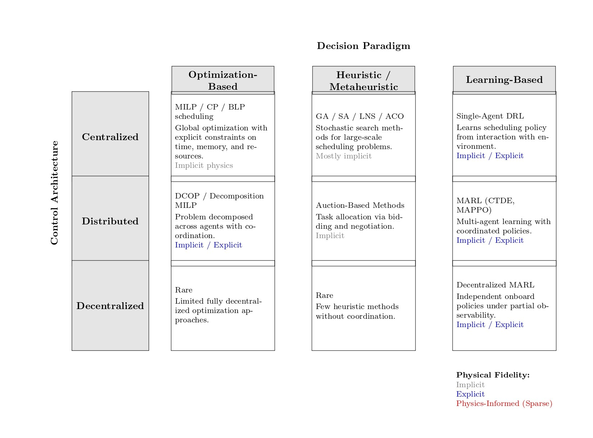
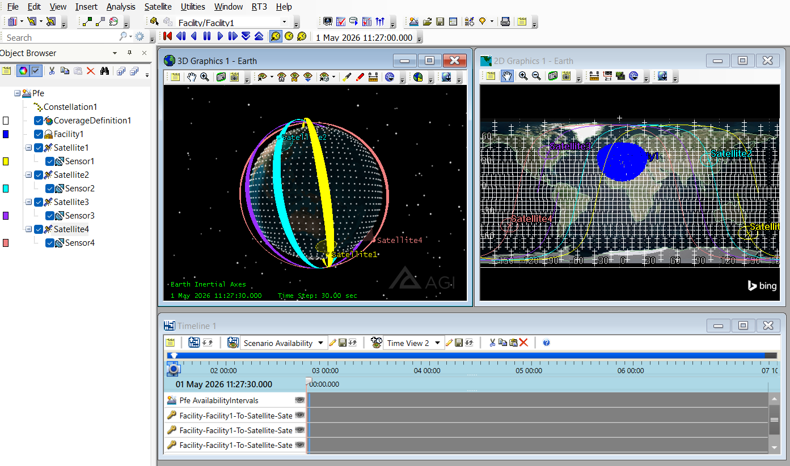
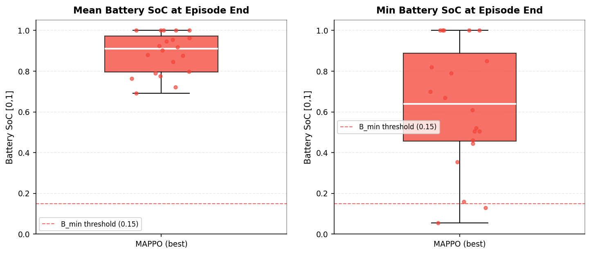
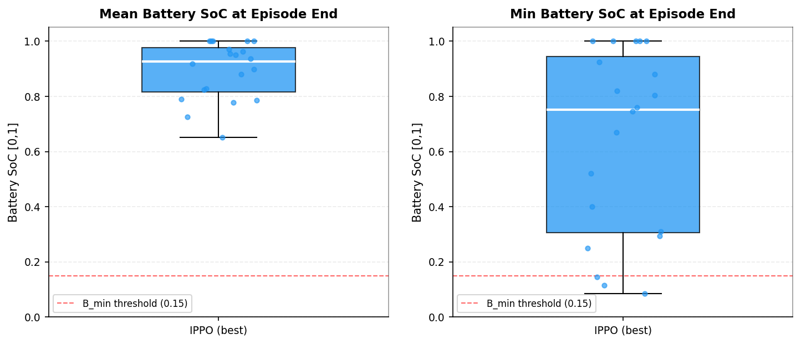
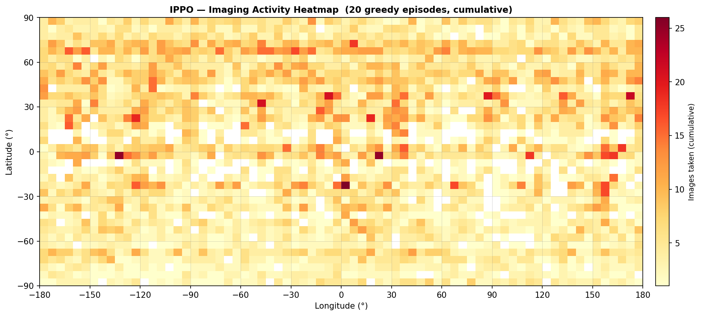
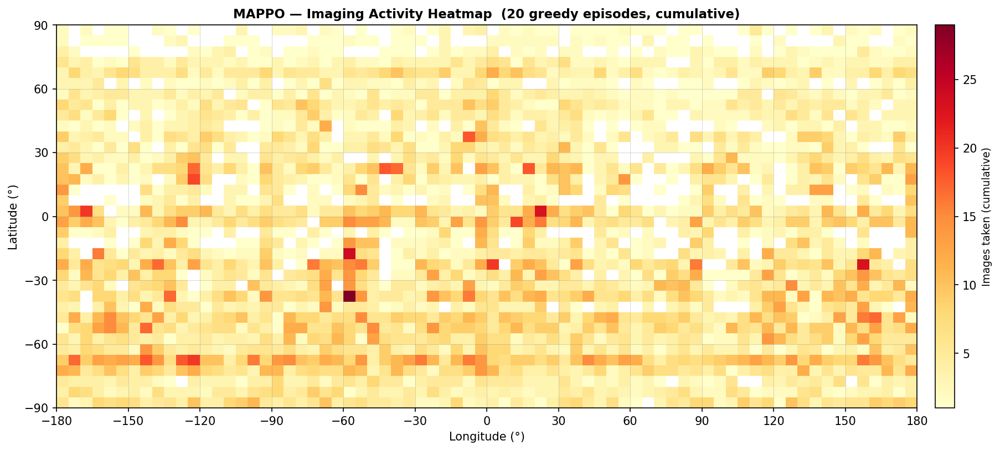

ORBIT
Engineering thesis defense · 2025/2026
Physics-Grounded Multi-Agent Reinforcement Learning for Reactive and Power-Aware EO Constellation Scheduling
Benoudjit Lyne · Chikhi Mey Aya
Supervisors
Dr. Larabi Mohammed El Amin (ASAL)
Dr. Benslimane Salim (ESTIN)
Jury
Dr. Yahiaoui Mouna (President)
Dr. Amara Karima (Examiner)
M. Abbes Anis Chawki (Examiner)
scroll / right arrow to begin
Overview
Table of contents
01
Context and Motivation
02
Foundations
03
Literature Review
04
Environment
05
Experimental Setup
06
Conclusion
01
SECTION 1
Context and Motivation
CONSTELLATIONS
What are EO satellites & constellations?
Earth Observation: from single satellites to constellation fleets
EO satellite: images the Earth (climate · disasters · security · mapping) [1]
Constellation: many satellites → more coverage, more often [2]
From a few large satellites → dozens–hundreds of agile ones.
[1] Rashed & Bang (2022), "A Study of Autonomous Small Satellite Constellations for Disaster Management and Deep Space Strategy," Remote Sensing .PAIS / IJCAI-ECAI .
SCHEDULE
What is scheduling?
The scheduling problem
Which target · which satellite · when to image · when to downlink [1]
Limited window
Limited power
Limited memory
combinatorial
multi-objective
[2]
?
WINDOW
CDS ALGIERS
DOWNLINK
[1] Wang, Wu, Xing & Pedrycz (2020), "Agile Earth Observation Satellite Scheduling Over 20 Years: Formulations, Methods and Future Directions," arXiv .ICAPS .
The 4 core challenges
Four constraints make this genuinely hard.
Power [1]
Battery drains while imaging
Recharges only in sunlight, not eclipse
Physical & orbital constraints [3]
Targets visible only in short windows
Attitude / slew limits between shots
Decentralization & partial observability [2]
Each satellite sees only itself
No shared real-time global view
Reactivity [4]
Clouds invalidate planned shots
Emergent events demand replanning
[1] Shang et al. (2025), "Joint Observation and Transmission Scheduling of Multiple Agile Satellites With Energy Constraint Using Improved ACO Algorithm," Acta Astronautica .JAIR .Int. J. Applied Earth Observation and Geoinformation .SpaceOps .
Motivation
Why now – why here
EO constellations are evolving: fleets are replacing single platforms [1]
Algeria scaling up: ASAL program growing, moving toward multi-satellite operations
A real gap on the ground: local mission planning is still single-satellite
FIELD REVIEW · ASAL CDS ORAN & ALGIERS
Planners don't model the constellation aspect
01
02
03
?
Single platform
Fleet era
New scheduling
needed
A novel, locally-needed contribution: scheduling built for the constellation shift
[1] Rashed & Bang (2022), "A Study of Autonomous Small Satellite Constellations for Disaster Management and Deep Space Strategy," Remote Sensing .
LEARN
Reinforcement learning
Reinforcement learning in one loop
Policy: state → action
Goal: maximize cumulative reward
Deep RL: neural nets approximate policy / value [1]
AGENT
ENVIRONMENT
action
state
reward
MDP = (S, A, P, R, γ)
[1] Mnih et al. (2015), "Human-Level Control Through Deep Reinforcement Learning," Nature .
PPO
PPO
PPO: the policy-optimization backbone
Stable
First-order
Clipped surrogate objective [1]
Basis of every method in this thesis
observation
s
ACTOR
π(a|s)
action distribution
CRITIC
V(s)
value estimate
clip(ρ, 1±ε)
PPO surrogate objective
advantage baseline
[1] Schulman, Wolski, Dhariwal, Radford & Klimov (2017), "Proximal Policy Optimization Algorithms," arXiv .
POMDP
Formal model
Our formal frame: Dec-POMDP
n cooperating agents
Shared team reward
Each sees only its local observation [1]
hidden state S
o_i
local observation only
Environment
Orbital Dynamics · r, v
Visibility Intervals I_i ⊆ [a_i, b_i]
State Space (S)
Battery · Memory · Request Queue
Orbital Phase
Agent Policy (πθ )
Actions: Slew · Imaging · Downlink
a_t ∈ A_mask
Reward Function (R)
ΣR = Σp_i x_i
Profit − Energy Penalty
Action a_t
Feedback
[1] Oliehoek & Amato (2016), "A Concise Introduction to Decentralized POMDPs," Springer .
MARL
Multi-agent learning
Multi-agent learning: CTDE, IPPO, MAPPO [1]
IPPO local critics 4 satellites, each its own local critic. Fully decentralized in training and deployment.
MAPPO CENTRAL CRITIC Training only: the central-critic link detaches at deployment. [2]
Centralized Training, Decentralized Execution: train smart, deploy independent.
[1] Dorri, Kanhere & Jurdak (2018), "Multi-Agent Systems: A Survey," IEEE Access .arXiv (MAPPO).
Landscape analysis
How existing methods handle the 4 challenges
✓ strong ·
~ partial ·
✗ weak
Method
Power /
Physical &
Scalability /
React-
Constraint
Contribution
Limitation
MILP / CP [1]
~
✓
✗
✗
✓
Near-optimal, exact constraints
Fails > ~10 sats; offline; slow
Metaheuristics [2]
~
✓
~
~
✓
Scales to medium fleets; mature
Ground-centric; batch replanning
Single-agent DRL [3]
~
~
~
✓
✗
Fast real-time decisions
Single agent; coarse physics; no global guarantee
MARL [4]
~
~
✓
✓
~
Decentralized coordination at scale; reactive
Weak physics; heavy training; no hard guarantees
[1] Wang, Wu, Xing & Pedrycz (2020), "Agile EO Satellite Scheduling Over 20 Years," arXiv .
[2] Wu et al. (2021), "Ensemble of Meta-Heuristic and Exact Algorithm for Multi-Satellite Observation Scheduling," arXiv .
[3] He et al. (2022), "A Generic MDP Model and RL Method for Scheduling Agile EO Satellites," IEEE Trans. Systems, Man, Cybernetics .
[4] Hady et al. (2025), "Multi-Agent RL for Autonomous Multi-Satellite EO," arXiv .
03
SECTION 3
Literature Review
AXES
Literature framework
One framework, three axes
Control Architecture (centralized vs. decentralized) [1]
Decision Paradigm (exact optimization, metaheuristics, single-agent RL, or MARL) [1]
Physical Fidelity (how realistically orbital physics and constraints are modeled) [2]

Three-axis taxonomy of 75 studies
[1] Wang, Wu, Xing & Pedrycz (2020), "Agile Earth Observation Satellite Scheduling Over 20 Years," arXiv .
[2] Raissi, Perdikaris & Karniadakis (2019), "Physics-Informed Neural Networks: A Deep Learning Framework for Solving Forward and Inverse Problems Involving Nonlinear PDEs," J. Computational Physics .
Research questions
Problematic & research questions
Can cooperative, physics-grounded MARL schedule an EO constellation: feasibly, reactively, and within power?
RQ1
Feasibility: Can learned policies respect hard physical constraints, not just soft penalties?
RQ2
Coordination: Can decentralized agents cooperate with no central assignment?
RQ3
Reactivity: Can the fleet respond to clouds and emergent events on the fly?
RQ4
Value: Does it beat classical heuristics: and does the centralized critic (MAPPO) help?
Answered in Sections 4–5
?
RQ1
Feasibility
RQ2
Coordination
RQ3
Reactivity
RQ4
Value
GAP
Our position
The missing cell: what we add
Physics-grounded MARL for EO = absent
[1][2]
Our contributions
01
3-axis taxonomy of 75 studies
02
Formal Dec-POMDP model of EO scheduling
03
STK geometry + 7-constraint action mask
04
IPPO & MAPPO schedulers under CTDE
05
Reactive + power-aware empirical comparison
PHYSICAL FIDELITY →
Geometry
+ Orbital
Action masking
MILP / CP
Metaheuristics
Single-DRL
MARL central
MARL decentr.
★
our work
[1] Liu, Dou, Zhang, Zhang & Zong (2023), "Multi-Agent RL-Based Coordinated Dynamic Task Allocation for Heterogeneous UAVs," IEEE Trans. Vehicular Technology .
[2] Raissi, Perdikaris & Karniadakis (2019), "Physics-Informed Neural Networks," J. Computational Physics .
Setup
4 satellites · 31 days of real STK geometry · 4 baselines.
Constellation 0 LEO satellites · Algiers station
Grid 36×72 = 0 cells, 5° – Δt = 30 s
Data Train 31 days / validate on unseen 30-day window
Budget 0 episodes (~5M steps)
Baselines Random · Highest-Priority · Priority×Coverage · Centralized-Greedy
Satellite
Plane
a (km)e i (°)ω (°)Ω (°)M (°)
Sat 1 P1
7200
0.000627
98.7
0
175.72
0.075
Sat 2 P2
7200
0.000627
98.7
0
145.72
90.075
Sat 3 P3
7200
0.000627
98.7
0
115.72
180.075
Sat 4 P4
7200
0.000627
98.7
0
85.72
270.075
a : semimajor axis · e : eccentricity · i : inclination · ω : arg. of perigee · Ω : RAAN · M : mean anomaly

STK orbital simulation · 4-sat constellation
State space
State: the global grid
36×72 grid · 5° cells · 2592 total
Base priority (static long-term importance of each cell)
Current priority (dynamically updated urgency)
Coverage value (imaging reward for observing the cell)
Cloud-cover (a mask that blocks or penalizes observation when clouds are present)
Cloud cover c_t Coverage v_t event Curr. priority p_t Base priority p_0 G_t 36x72 cells - 5deg resolution Global grid G_t · 4 layers · orange = emergent event
Obs · Act spaces
Observation & action space
Observation = 80 candidates + time + energy + orbital context
d p ν c θ e b Δt
1 2 3 4 5
⋮
80
80
own-state vector
9-D
80 × 8 + 9 =
649-D
Observation vector: candidate cells plus own-state features
Action = idle, or image one candidate cell
|Aᵢ| = 81
idle
a=0
image cell₁
a=1
image cell₂
a=2
image cell₃
a=3
⋮
image cell₈₀
a=80
1 idle + 80 cells
= 81 actions
Action space: idle or image one of 80 candidate cells
Reward function
Multi-objective shared reward
Chapter roadmap
System overview
STK Geometry
orbital propagation
visibility windows
attitude kinematics
STK · AGI
Dec-POMDP Env
[1]
state · observation
action mask (7 rules)
team reward R
Gymnasium
Policy / Critic
actor network (πθ)
critic network (V)
shared MLP backbone
IPPO / MAPPO
PPO Training
[2]
clipped surrogate
GAE advantage
multi-agent rollout
RLlib · CleanRL
[1] Oliehoek & Amato (2016), "A Concise Introduction to Decentralized POMDPs," Springer .
[2] Schulman, Wolski, Dhariwal, Radford & Klimov (2017), "Proximal Policy Optimization Algorithms," arXiv .
05
SECTION 5
Experimental Setup
Experiment
Experimental setup
4
satellites · ALSAT-type LEO
31d
30d
31d / 30d
train / val · STK geometry split
200 steps
≈ 100 min · ≈ 1 orbit
5 M
agent-steps · 6 250 episodes
random
priority map · per episode
Poisson
emergent events · ≈ 2 / episode
Training
IPPO: training & results
IPPO training curve: Noisier due to added complexity (events, pitch). Greedy eval settles at 27.09%; independent critics limit coordination.
29.06%
Priority-wtd coverage
47.7%
Event response rate
Solid policy from purely local critics: IPPO matches the greedy heuristic on coverage while responding to 47.7% of emergent events.
Training
MAPPO: training & results
MAPPO training curve: Fastest early gains, peaks at 31.74% (ep. 3600), then plateaus. Notable gap between noisy training rollouts (~22-24%) and stable greedy eval (~30%).
29.50%
Priority-wtd coverage
50.0%
Event response rate
Central critic pays off: MAPPO converges faster and scores a higher reward (597 vs 587), responding to 50% of emergent events.
Validation
Holds on unseen data
30%
20%
10%
28.92%
27.09%
29.36%
27.50%
IPPO
MAPPO
train
val
train
val
moderate drop, not catastrophic
Models trained on 31 days, tested on a separate unseen 30-day window; both policies held up with only a small coverage drop (~1-2%), showing reasonable temporal generalization.Honest but mild stress test: same simulator, same constellation, just a different time window. Robustness to different orbits, sensors, or demand patterns was never assessed, which is the main open gap.
Energy & constraints
Energy preserved, constraints respected
≈ 88.8%
mean final battery
tail case: 5.5%
0
slew-feasibility violations (both algorithms)

MAPPO

IPPO
Battery utilisation comparison under the reactive formulation for MAPPO (left) and IPPO (right).
Qualitative
Emergent division of labor
No central assignment: coordination from the shared reward

IPPO

MAPPO
Imaging heatmaps under the reactive formulation for IPPO (left) and MAPPO (right).
Result 2
Both learned policies beat every heuristic.
Method Reward Coverage Wtd.Cov Redundancy Events
Random 0 12.0% 12.0% 24.6% 0.15 Highest-Priority 0 19.6% 23.8% 46.8% 0.65 Priority×Coverage 0 27.6% 29.5% 27.1% 0.75 IPPO 0 27.1% 29.1% 27.1% 1.05 MAPPO 0 27.5% 29.5% 27.2% 1.10
Four baselines were tested (Random, Priority greedy, Priority×Coverage, Centralized Greedy). Three performance tiers emerged: Random at the bottom (12% coverage), Priority and Centralized Greedy in the middle (~19.6%, high redundancy), and Priority×Coverage, IPPO, and MAPPO all neck-and-neck at ~27-28%. MAPPO wins overall with the best reward and 50% emergent event response, beating the strongest heuristic on reactivity despite similar raw coverage.
Priority×Coverage ties on raw coverage; MAPPO wins reward + reactivity.
Result 3
Where MAPPO actually pulls ahead.
0 %emergent-event response rate
vs 47.7% IPPO, ~29% best heuristic
0 slew-feasibility violations
every episode
0 %mean final battery
energy preserved
Result 5
Deterministic deployment nearly doubles event response.
At deployment, commit to the best action - random exploration wastes the narrow response window.
Deployability
Can it run on a satellite? Yes · by a wide margin
At execution each satellite runs only the shared actor (critic discarded under CTDE)
Our actor, per satellite
108K params
0.43 MB (fp32) / 0.11 MB (int8)
~0.47 MB peak RAM
~1.1 MFLOPs / decision
~0.09 ms / decision (dev CPU)
Our actor
Raspberry Pi 4
Raspberry Pi 5 [2]
Jetson Orin Nano [3]
Φ-sat-1 (flown) [1]
RAM
~0.47 MB
up to 8 GB
up to 16 GB
up to 8 GB
ran ~2.1 MB CNN
Compute
~1.1 MFLOPs / decision
~13–17 GFLOPS
~30 GFLOPS
up to 67 TOPS
Myriad 2 VPU
Time / decision
~0.09 ms (dev CPU)
<1 ms (est.)
<1 ms (est.)
<1 ms (est.)
~325 ms
Power
negligible
~3–7 W
~3–12 W
7–25 W
~1.8 W
Fits 30 s budget?
✓
✓
✓
✓
✓ (325 ms ≪ cadence)
ESA's Φ-sat-1 (2020): first AI in orbit, heavier than ours, still flew.
0.43 MB · 1.1 MFLOPs · 0.09 ms · one decision per 30 s → ~328,000× timing headroom
30 s budget
0.09 ms used
[1] Giuffrida et al. (2022), "The Φ-Sat-1 Mission: The First On-Board Deep Neural Network Demonstrator for Satellite Earth Observation," IEEE Trans. Geoscience and Remote Sensing .
[2] Raspberry Pi Ltd. (2023), "Raspberry Pi 5 Product Brief / Datasheet."
[3] NVIDIA (2024), "Jetson Orin Nano Series Datasheet."
Contributions
What we delivered
01
✓
Taxonomy
3-axis framework · 75 studies mapped
02
✓
Dec-POMDP
full formal model of EO scheduling
03
✓
Physics-grounded env
STK + action mask · 0 violations
04
✓
IPPO & MAPPO
trained under CTDE · deployable in 0.43 MB
05
✓
Comparative eval
beats 4 baselines · MAPPO best balance
Limitations
Known boundaries
Coverage plateau (~27–31% · 80% milestone never hit)
?
Only 4 satellites · scale untested
Physics-grounded · not physics-informed
!
Energy tail-risk + missing diagnostics
SIM
Simulation-only
Future work
Where it goes next
01
100+
satellites
02
Physics-informed
MARL
differentiable residuals
[1]
03
Higher-fidelity
dynamics
Basilisk
[2]
04
Onboard flight
validation
Cooperative, physics-grounded MARL learns feasible, reactive, energy-aware imaging policies.
[1] Karniadakis et al. (2021), "Physics-Informed Machine Learning," Nature Reviews Physics .
[2] Kenneally, Piggott & Schaub (2020), "Basilisk: A Flexible, Scalable and Modular Astrodynamics Simulation Framework," Journal of Aerospace Information Systems .
Conclusion
Cooperative, physics-grounded MARL can schedule a constellation - feasibly, reactively, efficiently.
Beats all heuristic baselines on reward + reactivity
Reacts in real time (50% events) with zero feasibility violations
Power-aware (88.8% battery)
Next: scale to 100+ satellites · differentiable physics-informed layers · onboard flight validation
Thank youQuestions?

![Dark editorial space typography reference crop]()